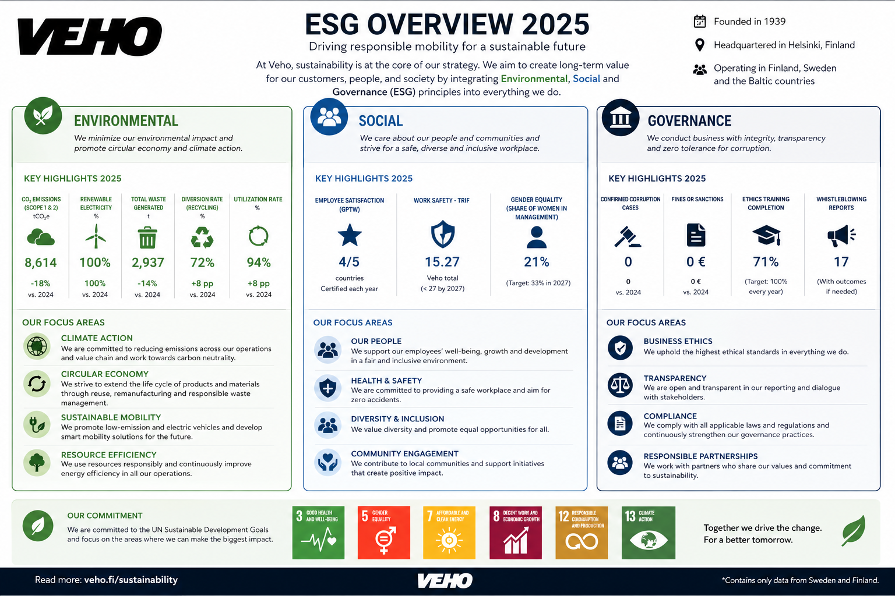
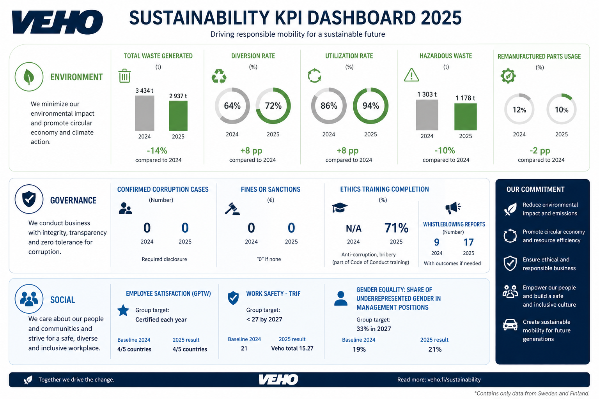

Environmental
Veho focuses on reducing environmental impact, improving waste management, increasing circular economy practices and supporting sustainable mobility.
- Waste reduction
- Diversion and utilization rates
- Climate action
Sustainability Prototype Website
This prototype presents Veho's sustainability work through ESG themes: Environmental, Social and Governance. It includes a KPI dashboard based on sustainability information and ESG reporting.
View KPI DashboardDriving cleaner, safer and more responsible mobility for the future.
ESG helps measure how responsibly a company performs in environmental, social and governance areas.
Veho focuses on reducing environmental impact, improving waste management, increasing circular economy practices and supporting sustainable mobility.
Social responsibility includes employee wellbeing, safety, satisfaction, diversity and inclusion.
Governance means ethical business, transparency, compliance, anti-corruption work and responsible decision-making.
A visual summary of Veho's ESG themes and key focus areas.

The dashboard highlights selected KPIs from Veho's sustainability work, including waste, circularity, ethics and employee-related indicators.

This prototype is based on Veho's public sustainability information and ESG report. AI was used to summarize sustainability themes, structure the content and support the visual prototype design.